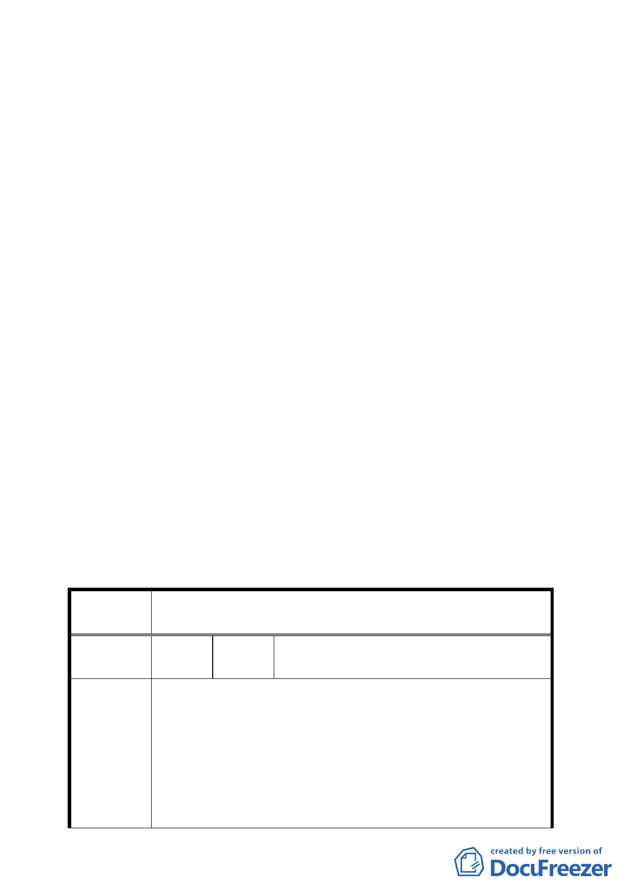

行召開專案小組審查會議。
十一、95 年 1 月 4 日本案回復為保護區之可行性配套措施研商座
談會議結論：
本案下次專案小組審查會議，請發展局就有關回復為保護
區後所可能衍生的問題及配套措施再做補充說明，俾供專
案小組委員審查參考。
十二、95 年 2 月 16 日第四次專案小組審查會議結論：
（一） 本案依自然條件視之理應變更回復為保護區，惟考量變更
後地主權益問題繁瑣，在市府（發展局）未能提出一具體
可行的配套措施與方案前，本專案小組建議暫仍維持做住
宅區不予變更。
（二） 本案續提委員會（大會）討論確認。
決議：本案因變更後地主權益問題繁瑣，在未有相對應可行的配
套處理措施與方案前，本階段通盤檢討仍維持做住宅區不
予變更。有關市政府建議就保護區變更為住宅區地區於整
體開發前得允許第 49 組：農藝及園藝業部分，因涉及林地
保育及水土保持，不宜逕行開放。
臺北市都市計畫委員會公民團體陳情意見綜理表
案 名 臺北市保護區變更為住宅區地區都市計畫通盤檢討主要計畫
（第一階段）案
編
號
１
陳情人
許敏欣、許敏惠、江茂義、陳勝稔、陳星
壽等三人（住二）
一、貴府於民國 68 年公告之「變更台北市都市計畫保護區計
畫(通盤檢討)案」變更二十五處保護區為住宅區,本「住
二」即為上述二十五處保變住之一.本區前經貴府以地形
陳情理由
陡峭未辦理擬訂細部計畫為由,而歸類為保變住「第一類
地區」,此與事實不符,本「住二」土地所有權人曾多次
開會研商開發事宜,凝具共識後,委託專業測量公司辦理
地形測量、坡度分析及地籍調查後,於九十四年一月十日
四